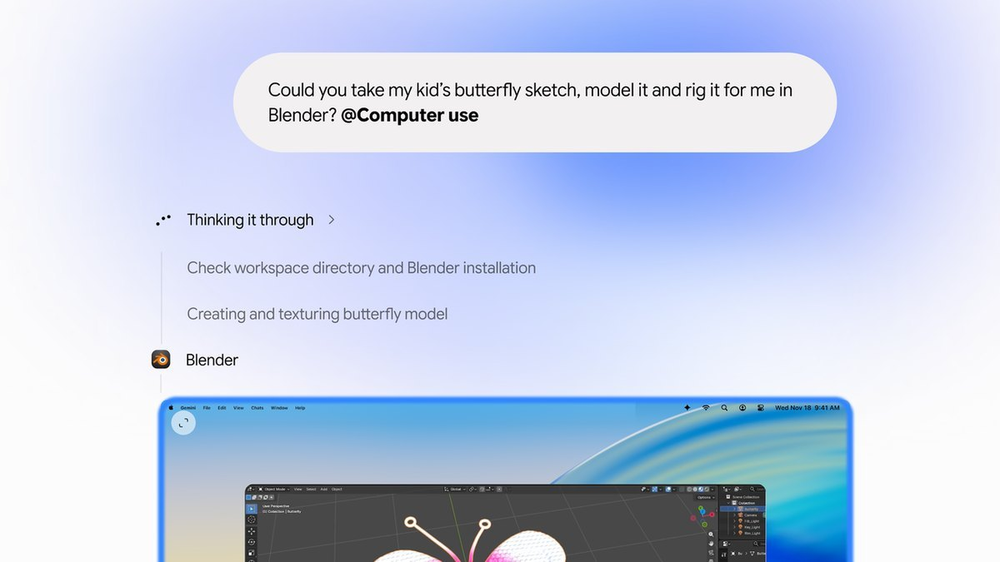

AI
Brief
Thursday edition
Gemini can now use the apps on your Mac for you
AWS's incident agent now talks back in Teams and Slack, Gemini agents load tools only when needed, Edge gets an on-device model for websites, and ChatGPT's always-on agents reach more plans.
What matters today

Gemini uses your Mac
Google lets Gemini click and type across Mac apps.
- How it works: describe a task and Gemini clicks, types and fills forms across local files, desktop apps and the web, in an isolated background window with a live preview.
- Controls: you pick which apps it may use, pause it, and approve key actions first. Rolling out in English in the US to Google AI Plus, Pro and Ultra users on Apple Silicon Macs.
Why it mattersAgents that use any app, not just ones with a connector, now come with a paid assistant. Your screens get clicked by other companies' agents too, so a confusing flow loses agent users as well.
Incident agent joins the chat
AWS DevOps Agent now answers in Slack and Teams channels.
- Teams: mention the agent in a private or shared channel to ask questions and steer an investigation; it replies in a thread. Before, Teams got one-way notifications only.
- Slack: each investigation can get its own channel, where follow-up questions need no @mention. Available in every commercial region where the agent runs.
Why it mattersIncident work moves from a console into the team chat, where the agent sits in the thread like a colleague. Chat apps are becoming the place where people steer agents, not just read their alerts.
Agents load tools on demand
Google lets Gemini agents fetch tool details only when needed.
- How: the model sees each tool's name and description and loads its full instructions only when it picks it. In preview in the Interactions API, at no extra charge.
- Same idea for open models: Baseten added it; with Slack, Notion and Baseten connectors on, its coding tests ran 62.5% cheaper and 26.2% faster.
Why it mattersHooking an agent up to hundreds of tools stops inflating every request. What limits how many integrations an agent can hold shifts from cost to how clearly each tool is named and described.
A built-in model for websites
Microsoft makes Aion Instruct the AI model inside Edge.
- Generally available: the 2.3-billion-parameter model is open weights on Hugging Face and replaces Phi-4-mini in Edge. Coming to Windows later this year.
- For sites: a Prompt API origin trial lets live sites call it and switch to a cloud model when needed; an experimental Decisions API is in developer preview.
Why it mattersSmall AI features in a web app, like a summary or a rewrite, can run on the user's device instead of your cloud bill. Microsoft wants the browser to be a standard place to run AI.
Dots reach more ChatGPT users
OpenAI widens dots, its always-on ChatGPT agents.
- Who: rolling out to all ChatGPT Business Standard users, and in a limited test with some Plus subscribers. Until now only Pro, Business Premium and Enterprise had them.
- What dots do: work toward a user's goals around the clock on their own cloud computer, learn from feedback and connect to over 4,000 apps through plugins.
Why it mattersAlways-on agents are moving from the top plans toward cheaper ones. As they spread, users will expect any AI product to make progress without being asked each time.
Also in the news
- Agentforce Coworker: Salesforce's figures: over 185,000 users and usage up 21x in three months. A new $50 per user per month option; Teams, iOS and desktop apps reach general availability in November.
- Hermes Enterprise: Nous Research and Microsoft bring the open-source Hermes Agent into Teams, the Microsoft Store and Azure, with agent work run in isolated Azure sandboxes.
- Superhuman Go: the assistant now watches email and schedule and drafts replies on its own, works inside Docs and adds 20 connected agents; Superhuman says it has over 1 million active users.
- AWS Marketplace agent payments: agents can buy select products per request over the x402 protocol through AgentCore, billed to the AWS account, with spending limits and approved sellers.
- Amazon Connect Resolutions: generally available; turns a process described in plain words or a procedures document into an agent work plan for refunds, disputes, fraud checks and claims.
- Genie 4 for developers: a day after its subscriber launch, Google's world model is in the Gemini API and AI Studio, making 720p worlds at 24 frames per second with sound.
- LangSmith Tool Gateway: in public beta; a managed layer that holds credentials and identity for every tool call an agent makes, with each call traced for audit.
- Postman Passport: developers and agents use an API without holding its key; a proxy in the customer's own systems checks identity and scope, then adds the credential.
- Genie ZeroOps: in public beta; Databricks' agent that finds and fixes broken data pipelines now opens fixes as pull requests in one click.
- ChatGPT Live Dictation: ChatGPT now transcribes as you speak, on all plans on web, desktop, iOS and Android; the 10-minute dictation limit is gone.
- Performance Factory: OpenAI describes the Codex-powered workflows that find and fix performance problems to keep ChatGPT fast.
- GPT-6.2 in Microsoft Copilot: Sol and Astra roll out with usage-based billing, generally available in Cowork and Copilot Studio; Astra is in Frontier for Word, Excel, PowerPoint and Chat.
- Hy4 flash weights: Tencent published the weights of its cheapest Hy model on November 18. Tencent says it handled over 50 trillion tokens on its first day.
- Meta Muse: employees' internal posts reportedly describe the agent mixing up conversations across accounts and showing other people's data.
- Apple agent: a job listing describes an Apple agent that uses apps, browses and codes. iOS 27.3 beta 2 tests Apple Intelligence usage limits.
- Microsoft and ByteDance: Microsoft is reportedly near a $500 million deal letting ByteDance use OpenAI models through Azure; a House China committee asked for a briefing on November 18.